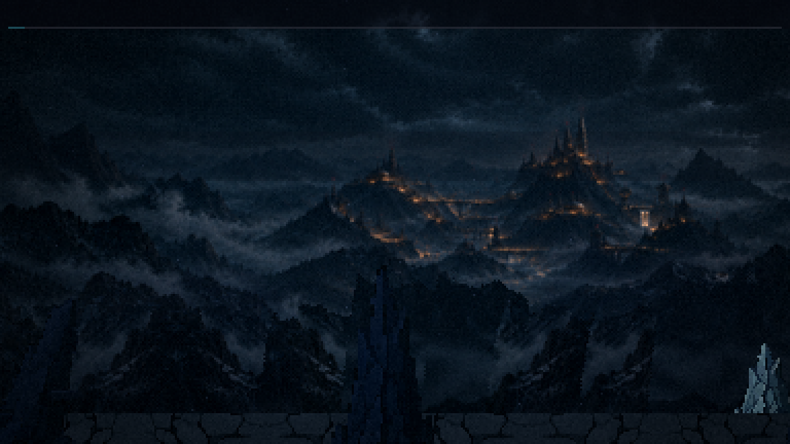
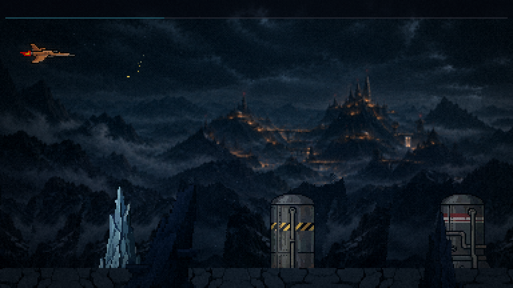
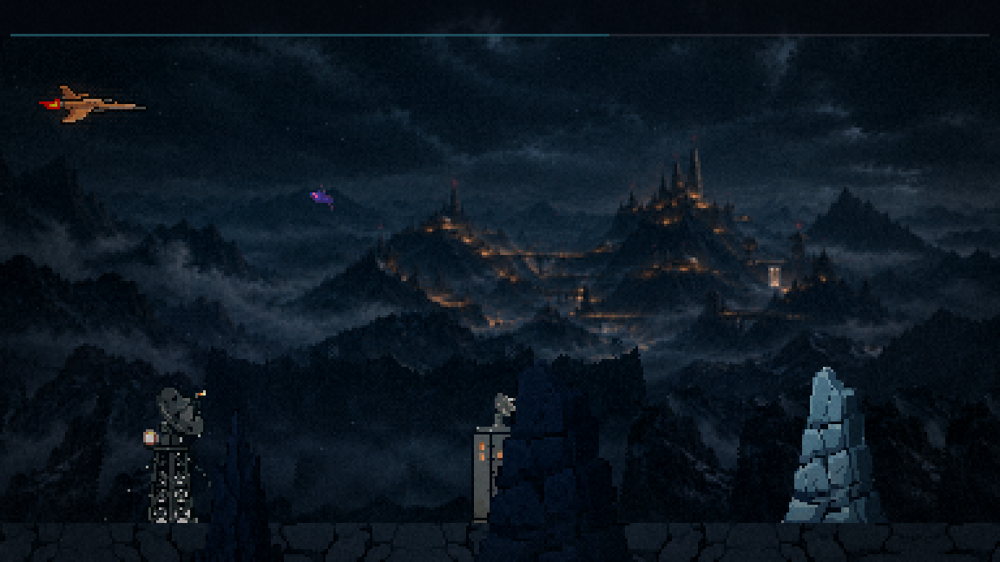
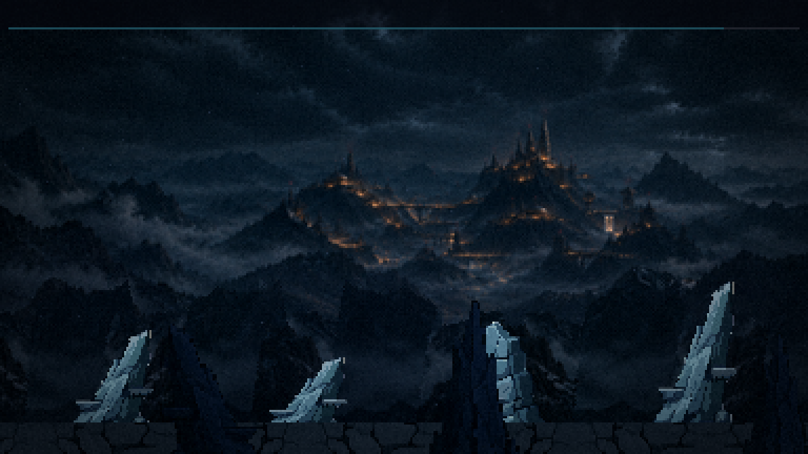
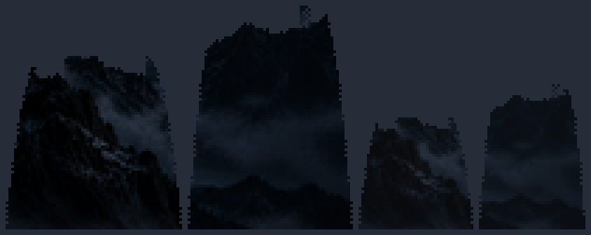
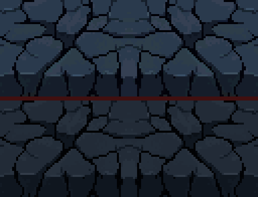
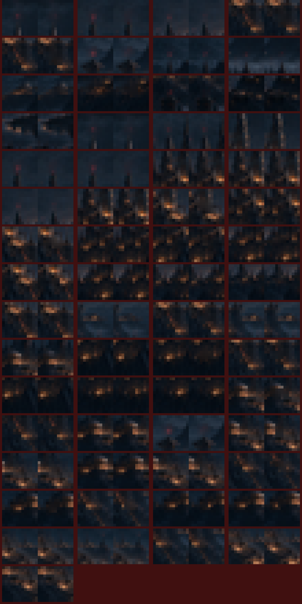
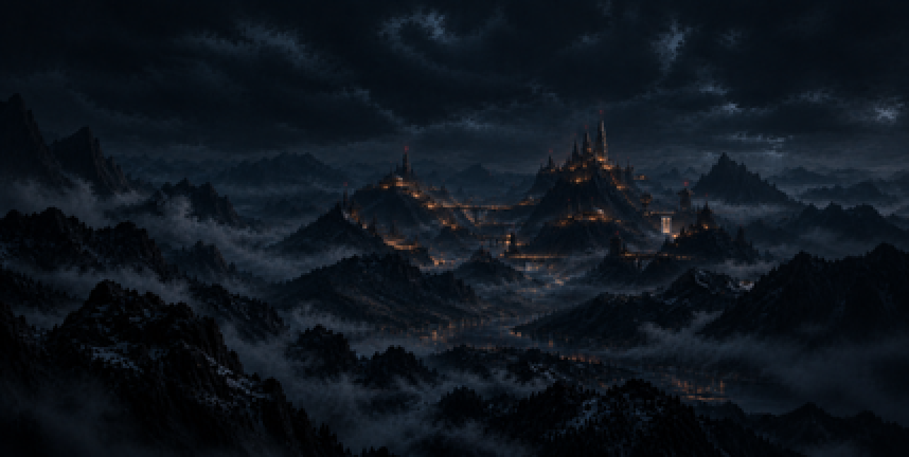

20/10/2026 · ← a pintura · o cenário de antes · A sua pintura inteira ao fundo, com os faróis das torres piscando e a cachoeira correndo; a cordilheira tirada das montanhas da frente dela; a bruma entre os planos; o chão na paleta dela. As peças do chão, o primeiro plano e os inimigos ainda são os de antes (a rodada 3 troca as peças).
A fase, em velocidade real
Só o cenário (70 s): os inimigos e os tiros escondidos, para julgar o fundo. A fase com o jogo e a saída da atmosfera estão na rodada 2, já com a invasão por cima.
Quadro a quadro

0 s

20 s

40 s

60 s: a pintura já andou ~25 px
As peças da rodada

A cordilheira: duas montanhas da frente da sua pintura, recortadas pelo cume (a encosta da montanha grande da esquerda e a montanha grande da direita). As duas da direita são as mesmas, menores e mais enevoadas: a faixa de trás. As outras massas não serviram: as colinas do meio têm luzes da colônia (iam aparecer duas vezes, andando) e a crista de pinheiros quase não tem névoa acima, então o recorte saía em degraus.

O chão: em cima o de antes; embaixo o mesmo desenho, um quarto mais escuro, nas cores da rocha da sua pintura.

Cada luz, acesa e apagada (8×), recortada como o jogo recorta: primeiro os faróis (piscam agora), depois as janelas (apagam na rodada 2).

A colônia acesa (o começo da fase).A colônia com todas as luzes apagadas: um gosto do fim da rodada 2.
O que você decide
A cordilheira: a altura e a quantidade das faixas, e se ela tapa demais a colônia.
A bruma: mais forte, mais leve ou como está.
O chão: o desenho de antes recolorido na sua rocha basta, ou quer arte nova.
A deriva: 45 px na fase inteira; ou a pintura parada.